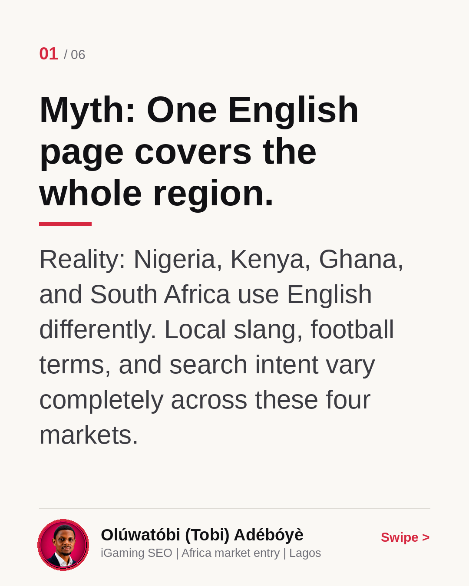
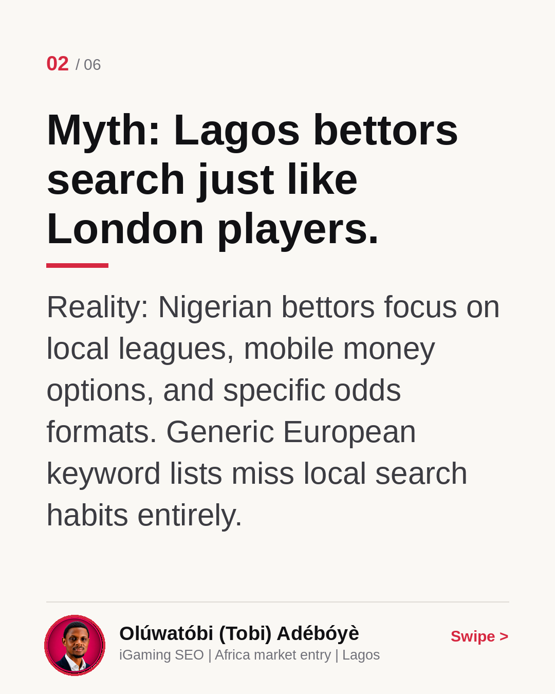
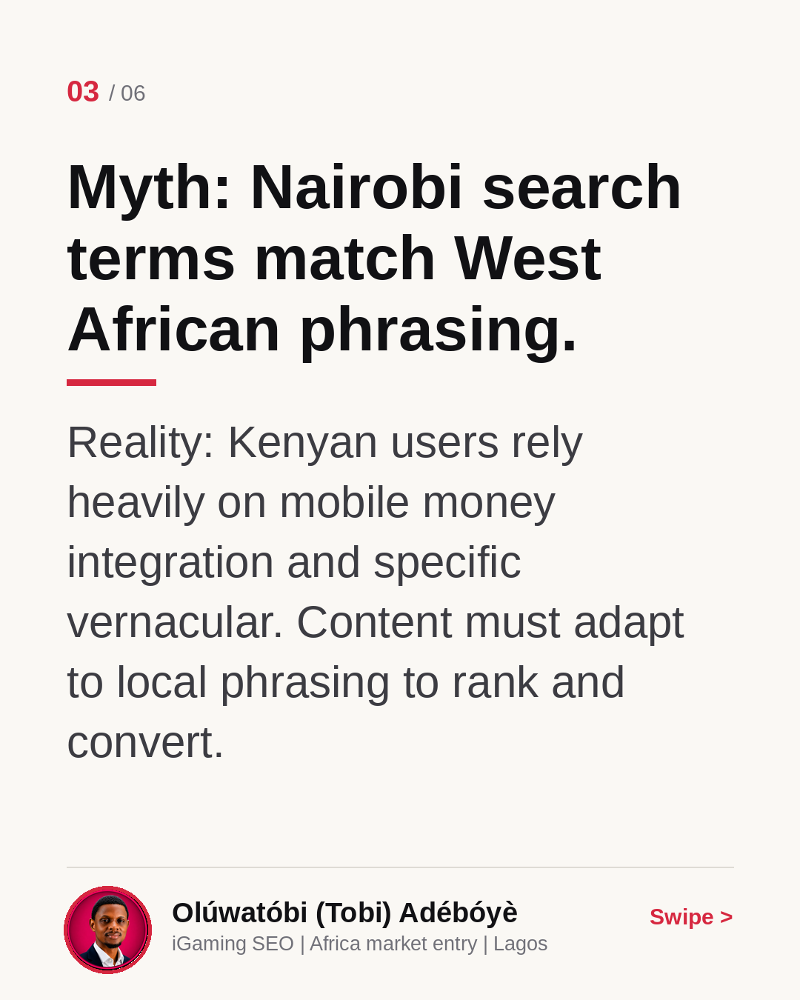
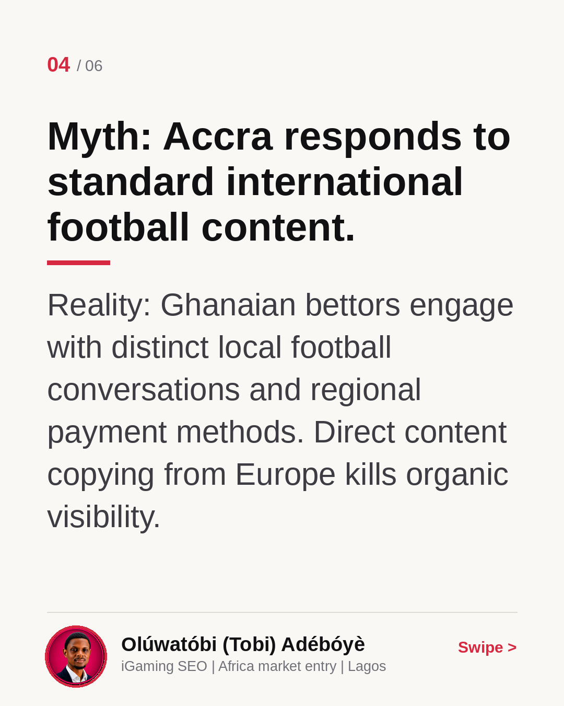
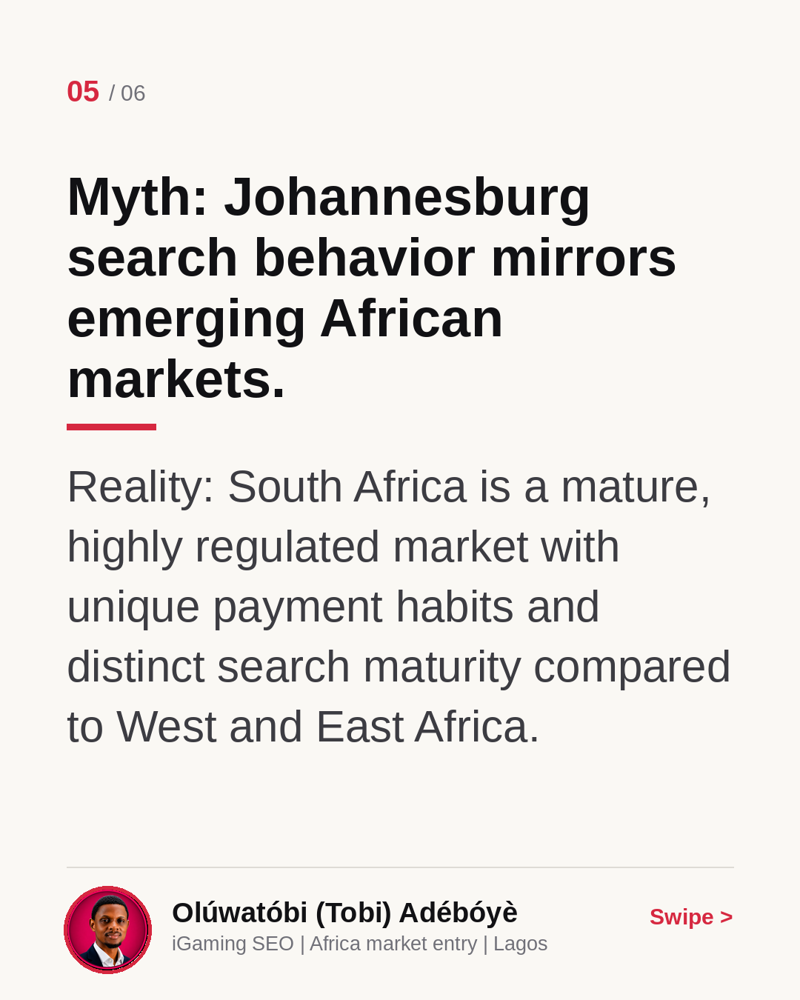
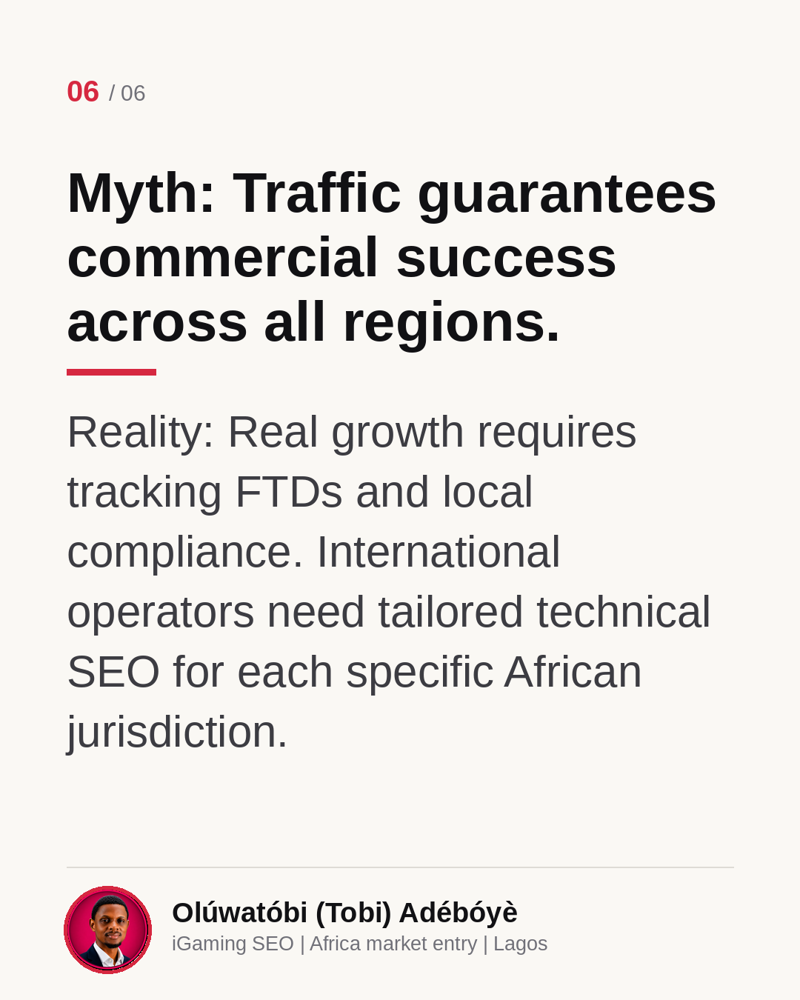

Four African Markets, Four Search Cultures
Expanding into Africa from Europe requires more than just translating your site into English. Nigeria, Kenya, Ghana, and South Africa have completely different search cultures, payment habits, and regulatory frameworks. In this carousel, I break down what changes between Lagos, Nairobi, Accra, and Johannesburg. Read through to see why a single regional strategy fails. Drop a comment below if you are currently weighing your move into Africa.
Myth: One English page covers the whole region.
Reality: Nigeria, Kenya, Ghana, and South Africa use English differently. Local slang, football terms, and search intent vary completely across these four markets.

Myth: Lagos bettors search just like London players.
Reality: Nigerian bettors focus on local leagues, mobile money options, and specific odds formats. Generic European keyword lists miss local search habits entirely.

Myth: Nairobi search terms match West African phrasing.
Reality: Kenyan users rely heavily on mobile money integration and specific vernacular. Content must adapt to local phrasing to rank and convert.

Myth: Accra responds to standard international football content.
Reality: Ghanaian bettors engage with distinct local football conversations and regional payment methods. Direct content copying from Europe kills organic visibility.

Myth: Johannesburg search behavior mirrors emerging African markets.
Reality: South Africa is a mature, highly regulated market with unique payment habits and distinct search maturity compared to West and East Africa.

Myth: Traffic guarantees commercial success across all regions.
Reality: Real growth requires tracking FTDs and local compliance. International operators need tailored technical SEO for each specific African jurisdiction.
